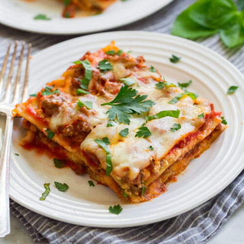

Lasagna

The Easiest Lasagna Recipe Ever!
Truly the easiest lasagna recipe you’ll ever make! No pre-cooking lasagna noodles, no grating cheeses, no homemade sauces, yet it’s so perfectly delicious!!
This recipe has been my go to for months. I don’t know why it’s taken me so long to get around to sharing it, it really is just too good!
My family is crazy about it. My daughter has even labeled this specifically as one of her favorite foods.
Ingredients
- Lean Ground Beef -I use 85 – 91% lean
- Marinara Sauce -my go to is Rao’s
- Vegetable Broth -chicken broth should work fine too
- Lasagna Noodles -do not use no boil
- Ricotta Cheese -whole or skim works fine
- Shredded Mozzarella Cheese -pre-shredded saves time but the blocks you grate yourself are great too
- Shredded Parmesan Cheese -this can be grated (finer crumbly) or shredded (small slivers)
Steps
- Preheat oven, grease baking dish
- Cook beef in skillet
- Stir in marinara sauce and vegetable broth
- Layer to assemble lasagna, spread 1/3 of the marinara sauce into bottom of baking dish. Top with 3 lasagna noodles
- Spread 1/2 of the ricotta over the pasta. Top evenly with 1/2 of the mozzarella and 1/2 of the parmesan. Top with another 1/3 of the sauce
- Add 3 more lasagna noodles then spread even with with remaining 1/2 of the ricotta. Pour and spread over last 1/3 of the sauce
- Top with remaining 1/2 of the mozzarella and parmesan
- Cover dish tightly with foil and bake
- Remove foil then continue to bake uncovered
- Let rest about 5 minutes before slicing. Garnish with fresh basil or parsley if desired